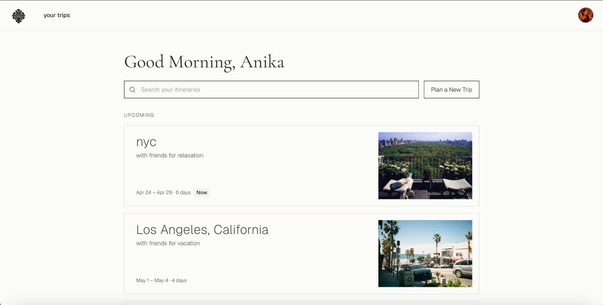
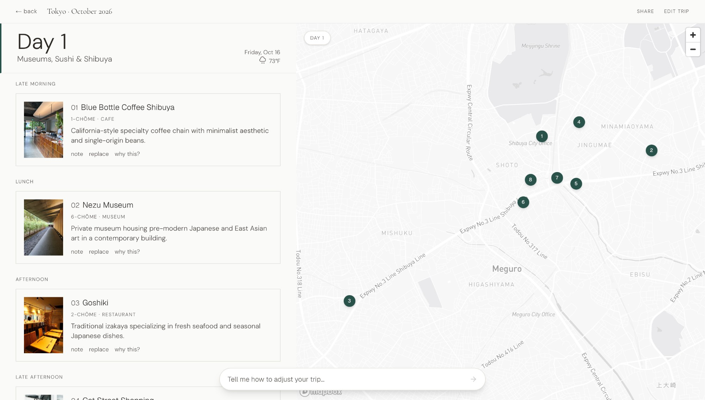
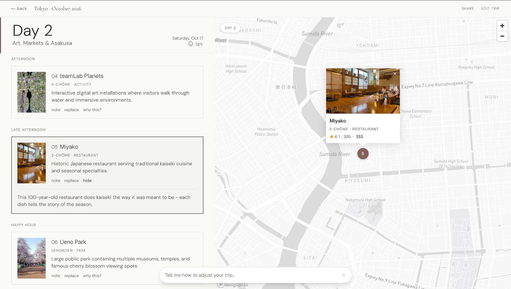
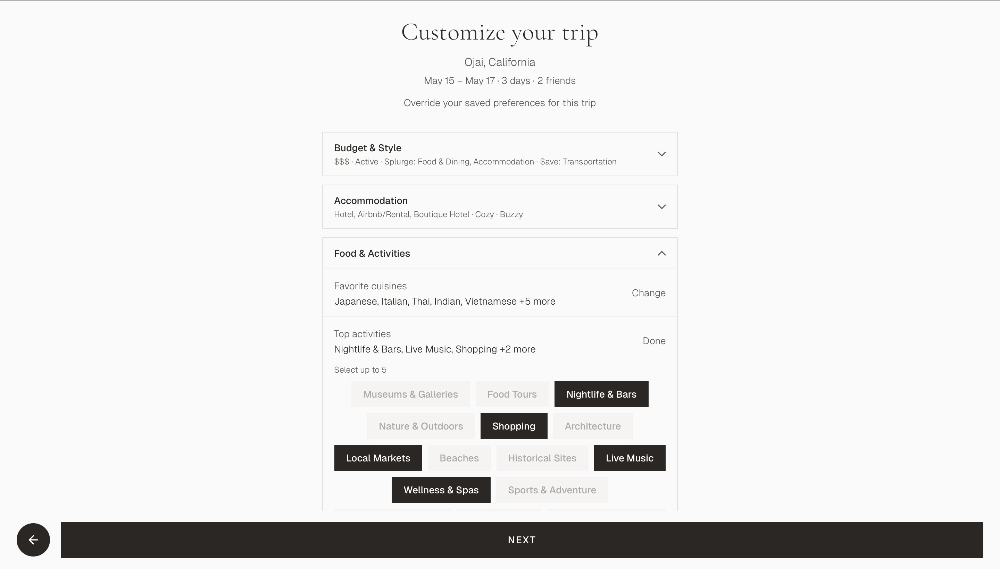

Mirra
A travel app that plans like a well-traveled friend.
Mirra is a travel itinerary app I've been building as a passion project. Every travel tool either gives you a generic list or overwhelms you with options. Mirra generates itineraries the way a well-traveled friend would: geographically logical, experience-aware, and highly personalized. I built the full stack using Claude Code and designed the UI from scratch.
The first impression.

A quiet, cinematic splash — no call to action, no pitch. Just an aesthetic that signals what kind of trips this app cares about. Restraint is the value proposition.
The home base.

A personalized greeting and a clean list of trips, with a current trip flagged Now. Two actions only: search past itineraries or plan a new one. Everything else stays out of the way.
The itinerary, day by day.

Each day reads like a thoughtful guide — late morning, lunch, afternoon — with the stop, its neighborhood, and a one-line reason it's there. Pinned to the right, an interactive map shows the day's geography at a glance.
Tap a pin, get the story.

The map expands any stop into a card with photo, neighborhood, and rating. The conversation bar below lets you reshape the trip in plain English: "less seafood," "more time at teamLab." No menus, no settings — just words.
Personalization that means something.

Budget, accommodation style, activity tags — all on a single screen. Defaults come from your saved preferences; overrides only apply to this trip. The system learns without locking you in.